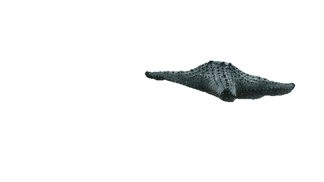
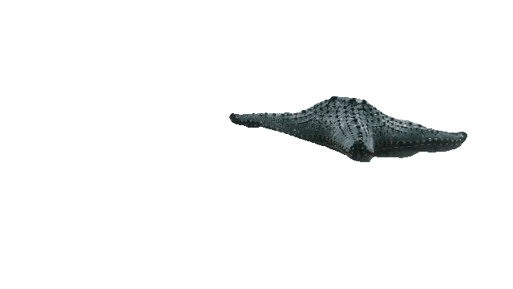

.jpg)
.jpg)
Mais de 80% de todos os biomas do mundo estão presentes no mar, ou seja, os ecossistemas marinhos são fundamentais para o equilíbrio da biomassa do nosso planeta. Deste modo, é preciso um enorme volume de oxigênio para abastecer toda essa vida marinha, sendo ele proveniente das algas marinhas.
Em outras palavras, a principal importância das algas é a de garantir a vida marinha a partir da fotossíntese. Além disso, vale destacar que as algas servem de alimentos para peixes, outros animais marinhos e até para o ser humano; tambem servem na criação de medicamentos e desempenham papeis importantes para a manutenção do planeta Terra, produzindo até 90% de todo oxigênio.
 


Dia Mundial da Tartaruga é um evento promovido anualmente no dia 23 de maio desde 2000 pela American Tortoise Rescue. Tem o objetivo de trazer à atenção e aumentar o conhecimento e o respeito por quelônios e difundir o conceito de ajudá-los a sobreviver e se desenvolver.
As baleias brasileiras são muito importantes para o meio ambiente e para a sociedade. Elas contribuem para a manutenção da biodiversidade marinha, pois são predadores de topo de cadeia e regulam as populações de suas presas. Elas também ajudam a capturar e armazenar carbono, reduzindo o efeito estufa e as mudanças climáticas.